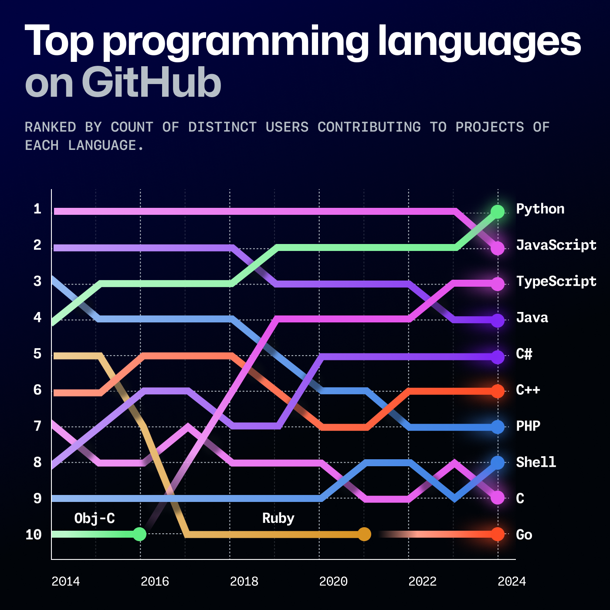
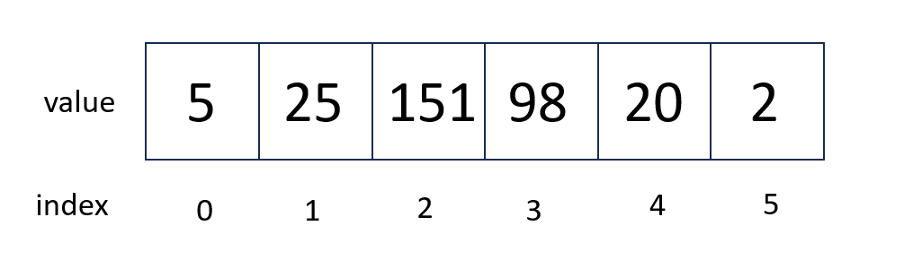

Introduction to Python#
Overview
Questions
What is the Python programming language, and what is it used for?
What are the advantages and disadvantages of using Python?
What is a Jupyter notebook?
Objectives:
Describe the Python programming language and its uses.
Learn the basics of the Jupyter notebook.
What is Python and why use it?#
All of the software you use on a regular basis is created through the use of programming languages. Programming languages allow us to write instructions to a computer. There are many different programming languages, each with their own strengths, weaknesses, and uses. Some popular programming languages you might hear about are Javascript (used on the web - any website with interactive content likely uses javascript), Python (scientific programming and many other applications), C++ (high performance applications), SQL (databases), and many more.
Python is a computer programming language that has become ubiquitous in scientific programming and is growing in popularity across all domains of programming. The Python programming language was first introduced in the year 1991, and has grown to be one of the most popular programming languages for both scientists and non-scientists. According to the 2024 GitHub Report, Python is the most popular programming languages for developers.

Compared to other programming languages, Python is considered more intutitive to start learning and is also extremely versatile. Python is also very commonly used for applications in Artificial Intelligence and Machine Learning. Notably, in contrast to some other languages commonly used in scientific programming, Python is free and open-source. This means anyone can download, install, and use Python. Python can be used to build web applications, interact with databases, and and to analyze data.
Python in Science#
Python is used in many different scientific fields, including chemistry, physics, biology, and astronomy. Python is used in scientific programming for a variety of reasons, including:
Python is free and open-source.
Python is easy to learn (compared to compiled programming languages like C++).
Python has a large community of users and developers.
The Scientific Python ecosystem is a set of packages commonly used for scientific applications. These packages are the foundation of scientific Python programming across a range of disciplines and include NumPy, SciPy, Matplotlib, and Pandas.
In chemistry specifically, there are a number of specialized libraries used for processing or analyzing chemical data. For example, there are many libraries for reading and writing chemical file formats, such as the Open Babel library. There are also libraries for cheminformatics, like RDKit, and libraries for quantum chemistry, like Psi4. For experimental chemists, there are libraries for working with and analyzing NMR spectra.
Getting Started#
Our initial lessons will run python interactively through a Python interpreter. We will use an environment called a Jupyter notebook. The Jupyter notebook is an environment in your browser that can be used to write an execute Python code interactively. You can view a Jupyter notebook using your browser or in some specialized text editors.
Jupyter notebooks are made up of cells. Cells can either be markdown (text) or code cells.
This cell is a Markdown Cell.
Code cells have executable Python code in them.
To change the type of a cell you can use the drop down option in the top window.
To run code in a cell, click inside of the cell and press Shift+Enter.
If the code executes successfully, the next cell will become the active cell.
Markdown is a text markup language that Jupyter formats into nice looking text. In markdown, for example, a first level heading is denoted by
# Heading
Double click inside this cell to see what the markdown cell looks like!
Try adding some subheadings (##) or bullet points yourself!
Our First Python Code#
Any Python interpreter can work just like a calculator.
This is not very useful.
Press the Shift Key and the Enter Key (Shift + Enter) at the same time to run (also called “execute”) the code in a cell.
The following cell contains an expression to calculate 3 + 7
3 + 7
You can use the cells below to try out some other calculations.
When doing calculations in Python, you can use the following operators:
+for addition-for subtraction*for multiplication/for division**for exponentiation
# Write some code to calculate the result of adding 10 and 55 together.
10
# Write some code to calculate the result of subtracting 5 from 100.
100 - 5
# Write some code to calculate dividing 100 by 4.
100 / 4
# Write some code to calculate the result of squaring 10.
10 ** 2
100
Assigning variables#
In the cells above, we saw that Python can perform calculations for us. To save our calculated values we can assign them to a variable for later use. Variable assignment is the technical term for doing this. If we do not assign an expression to a variable, we will not be able to use its value later.
The syntax for assigning variables is the following:
variable_name = variable_value
Let’s see this in action with a calculation. Let’s define some variables for our calculation. When you run this code, you will not see any output. However, the variables have been assigned values.
deltaH = -541.5 # kJ/mole
deltaS = 10.4 # kJ/(mole K)
temp = 298 # Kelvin
Notice several things about this code.
The text after # are comments.
The computer does not do anything with these comments.
They have been used here to remind the user what units each of their values are in.
Comments are also often used to explain what the code is doing or leave information for future people who might use the code.
When choosing variable names, you should choose informative names so that someone reading your code can tell what they represent. Naming a variable temp or temperature is much more informative than naming that variable t.
There are a few other things to know about variables in Python:
The variable name must start with a letter or an underscore. Variable names cannot start with a number.
The variable name can only contain letters, numbers, and underscores.
The variable name is case-sensitive. This means that
Tempandtempare different variables.Variables must be created, or “defined”, before they can be used. If you try to use a variable that has not been defined, you will get an error.
We can now access any of the variables from other cells. Let’s calculate something using our defined variables.
# calculate something with your variables - what might we want to calculate with deltaH, deltaS, and temp?
deltaG = deltaH - temp * deltaS
# Put the variable you created as the last thing in the cell to see its value
deltaG
-3640.7000000000003
Check your understanding
Write some code below to calculate the pressure of an ideal gas using the ideal gas law. The ideal gas law is given by: PV = nRT, where P is the pressure, V is the volume, n is the number of moles, R is the ideal gas constant, and T is the temperature in Kelvin.
Define Python variable for each term in the ideal gas law and calculate the pressure of an ideal gas at 300 K, 1 L, 1 mol, and R = 0.0821 L atm / (mol K).
Solution
# Define the variables
n = 1 # number of moles (mol)
V = 1 # volume (L)
T = 300 # temperature (K)
R = 0.0821 # ideal gas constant (L atm / (mol K))
# Calculate pressure using the ideal gas law: P = nRT / V
P = (n * R * T) / V
# Print the result
print(f"The pressure of the ideal gas is {P} atm.")
The pressure of the ideal gas is calculated as 24.63 atm.
The tab key#
Jupyter notebooks allow autocomplete using the tab key.
To test this out, try typing pri in the cell below, then press tab on your keyboard twice.
You should see that the word print is completed for you.
After you have the word print add a parenthesis, then start typing delt and press tab twice again.
You will see a list of potential variables or functions you might want to use.
You can use the arrows + the Enter key to select the variable you would like to use.
Using Functions#
Functions are reusable pieces of code that perform certain tasks. Examples include printing, opening files, performing a calculations, and many others. Functions have a name that is followed by parenthesis containing the function inputs separated by commas (also called arguments).
function_name(argument1, argument2)
A function might perform a calculation and give us the calculated value. This is called the return value of the function. We can assign the return value of a function to a variable.
variable_name = function_name(argument1, argument2)
For example, if we think about our calculations above, we might decide that our results have too many decimal places.
We can use the round function to round our results to a certain number of decimal places.
The round function takes in the number you want to round and the number of decimal places you want to round to.
pressure = 2.3456
# Use the round function to round pressure to two decimal places. Put the result in a new variable called rounded_pressure.
rounded_pressure = round(pressure, 2)
# Put rounded_pressure in the last line of the cell to see its value.
rounded_pressure
In the previous code block, we introduced the print function. Often, we will use the print function just to make sure our code is working correctly.
Saving New Values#
Notice in our previous code block that we saved the rounded value of pressure by assigning it to a new variable called rounded_pressure.
When we did this, we saved the value of the rounded pressure for later use.
Notice that in Python, just calling a function or performing a calculation with a variable does not save the result or overwrite the variable.
print(pressure)
round(pressure,2)
print(pressure)
print(pressure)
pressure = round(pressure,2)
print(pressure)
Now, you can see that we have changed the value of pressure to the rounded value of pressure.
Is this really what we wanted to do?
There are situations where it is reasonable to overwrite a variable with a new value, but you should always think carefully about this. Usually it is a better practice to give the variable a new name and leave the existing variable as is.
Check your understanding
Round your deltaG calculation to 2 decimal places and print it out.
Should you save your rounded value to a new variable or overwrite the existing variable?
Solution
It is generally a good practice to save the rounded value to a new variable
(e.g., rounded_deltaG) instead of overwriting the original variable deltaG.
This approach retains the original precision, which may be useful if you need
the unrounded value for further calculations. By creating a new variable,
you also make your code more readable and less prone to accidental errors.
# Round deltaG to 2 decimal places
rounded_deltaG = round(deltaG, 2)
# Print the rounded value
print(f"The rounded value of deltaG is {rounded_deltaG}")
Data Types#
When working with computers and programming languages, the concept of a data type is very important. A data type is a classification that specifies which type of value a variable can hold. A human can tell the difference between the number 1 and the word “one”, but a computer needs to know the difference between these two things.
Each variable is some particular type of data.
The most common types of data are strings (str),
integers (int), and floating point numbers (float).
You can identify the data type of any variable with the function type(variable_name).
type(deltaG)
You can change the data type of a variable like this. This is called casting.
deltaG_string = str(deltaG)
type(deltaG_string)
We could have created a variable as a string originally by surrounding the value in quotes "". It doesn’t matter if you use single or double quotes, the first quote just has to match the closing quote.
string_variable = "This is a string"
print(type(string_variable))
Lists#
Another common data structure in Python is the list. Lists can be used to group several values or variables together. Lists are a default data type in Python - meaning they are always available no matter what libraries you are using.
You can visualize a list using the illustration below. In our picture, our list has 6 elements. Notably for Python, when counting elements in a list, you start at 0.

Lists are created by adding square brackets around a value or variable.
List elements are separated by commas.
Python has several built in functions which can be used on lists.
The function len can be used to determine the length of a list.
The max function can be used to find the maximum value in a list.
# I make a list with square brackets and values separated by commas
energy_kcal = [-13.4, -2.7, 5.4, 42.1]
# I can measure the length of the list using the len() function
energy_length = len(energy_kcal)
# I can measure the maximum value of the list using the max() function
max_energy = max(energy_kcal)
# print calculated values
print('The length of this list is', energy_length)
print('The maximum of the energy values is', max_energy)
To operate on a particular element of the list, you use the list name and then put in brackets which element of the list you want. In Python counting starts at zero. So the first element of the list is list[0].
# Print the first element of the list
print(energy_kcal[0])
You can use an element of a list as a variable in a calculation.
# Convert the second list element to kilojoules.
energy_kilojoules = energy_kcal[1] * 4.184
print(energy_kilojoules)
Slices#
Sometimes you will want to make a new list that is a subset of an existing list. For example, we might want to make a new list that is just the first few elements of our previous list. This is called a slice. The general syntax is
new_list = list_name[start:end]
When taking a slice, it is very important to remember how counting works in python. Remember that counting starts at zero so the first element of a list is list_name[0]. When you specify the last element for the slice, it goes up to but not including that element of the list. So a slice like
short_list = energy_kcal[0:2]
includes energy_kcal[0] and energy_kcal[1] but not energy_kcal[2].
print(short_list)
If you do not include a start index, the slice automatically starts at list_name[0]. If you do not include an end index, the slice automatically goes to the end of the list.
Here’s the exercise rewritten in your preferred format:
Check Your Understanding
What does the following code block print?
slice1 = energy_kcal[1:]
slice2 = energy_kcal[:3]
print('slice1 is', slice1)
print('slice2 is', slice2)
See if you can predict the output, then check yourself by running the code.
Solution
slice1 is [-2.7, 5.4, 42.1]
slice2 is [-13.4, -2.7, 5.4]
Repeating an operation many times: for loops#
Often, you will want to do something to every element of a list. The structure to do this is called a for loop. The general structure of a for loop is
for variable in list:
do things using variable
There are two very important pieces of syntax for the for loop. Notice the colon : after the word list. You will always have a colon at the end of a for statement. If you forget the colon, you will get an error when you try to run your code.
The second thing to notice is that the lines of code under the for loop (the things you want to do several times) are indented. Indentation is very important in python. There is nothing like an end or exit statement that tells you that you are finished with the loop. The indentation shows you what statements are in the loop. Each indentation is 4 spaces by convention in Python 3. However, if you are using an editor which understands Python, it will do the correct indentation for you when you press the tab key on your keyboard. In fact, the Jupyter notebook will notice that you used a colon (:) in the previous line, and will indent for you (so you will not need to press tab).
Let’s use a loop to change all of our energies in kcal to kJ.
for number in energy_kcal:
kJ = number * 4.184
print(kJ)
Now it seems like we are really getting somewhere with our program! But it would be even better if instead of just printing the values, it saved them in a new list. To do this, we are going to use the append function. The append function adds a new item to the end of an existing list. The general form of the append function is
list_name.append(new_thing)
for number in energy_kcal:
kJ = number * 4.184
energy_kJ.append(kJ)
print(energy_kJ)
This is an example of an error message. An error message is what occurs if there is something wrong with your code. In Python, when you read error messagees, you should try to read the last line of the error message first. It will have a message about what went wrong in the program execution.
This code doesn’t work because on the first iteration of our loop, the list energy_kJ doesn’t exist. To make it work, we have to start the list outside of the loop. The list can be blank when we start it, but we have to start it.
energy_kJ = []
for number in energy_kcal:
kJ = number * 4.184
energy_kJ.append(kJ)
print(energy_kJ)
Making choices: logic statements#
Within your code, you may need to evaluate a variable and then do something if the variable has a particular value. This type of logic is handled by an if statement. In the following example, we only append the negative numbers to a new list.
Other logic operations include
equal to
==not equal to
!=greater than
>less than
<greater than or equal to
>=less than or equal to
<=
You can also use and, or, and not to check more than one condition.
To define what happens if the if statement is not met, you can use the else keyword.
negative_numbers = []
positive_numbers = []
for number in energy_kJ:
if number < 0:
negative_numbers.append(number)
else:
positive_numbers.append(number)
print("Negative numbers:", negative_numbers)
print("Positive Numbers: ", positive_numbers)
Final Challenge
Calculate ∆G for a reation with ∆H=1.52 kJ/mol and ∆S=5.1 J/K mol for 100 K, 150 K, 200 K, 250 K, 300 K, 350 K, and 400 K.
You should create two lists: one with ∆G values and one with temperatures for which the reaction is spontaneous.
Save the ∆G values in a list called deltaG_list and the temperatures for which the reaction is spontaneous in a list called spontaneous_temp_list.
Steps:
Define a list of temperatures
Create empty lists called
spontaneous_temp_listanddeltaG_listUse a for loop to calculate ∆G for each temperature.
Use an if statement to determine if the reaction is spontaneous at each temperature.
Make sure you pay attention to units.
Solution
# Define constants
deltaH = 1.52 * 1000 # Convert kJ/mol to J/mol
deltaS = 5.1 # J/K mol
# Define list of temperatures
temperatures = [100, 150, 200, 250, 300, 350, 400]
# Create empty lists
deltaG_list = []
spontaneous_temp_list = []
# Calculate ∆G for each temperature and determine spontaneity
for T in temperatures:
deltaG = deltaH - T * deltaS
deltaG_list.append(deltaG)
if deltaG < 0: # Check if reaction is spontaneous
spontaneous_temp_list.append(T)
# Print results
print("∆G values:", deltaG_list)
print("Temperatures for which the reaction is spontaneous:", spontaneous_temp_list)